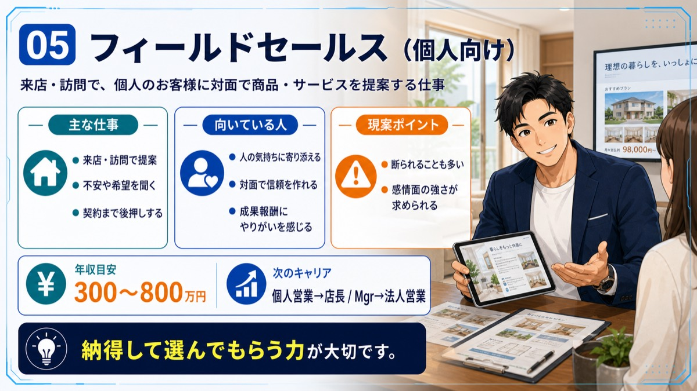
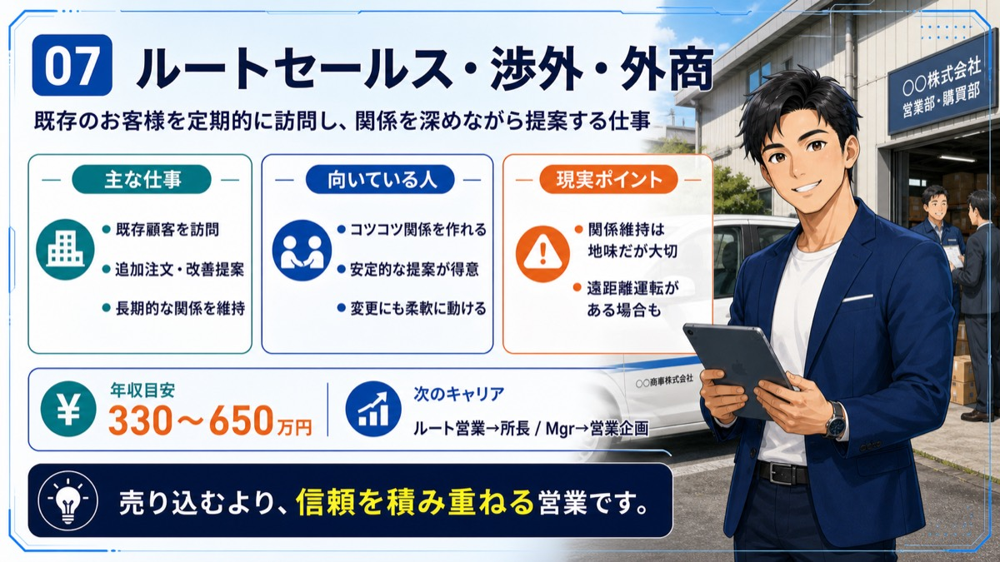
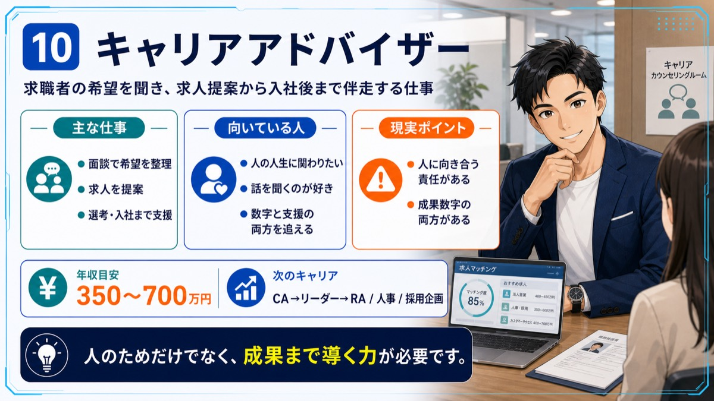
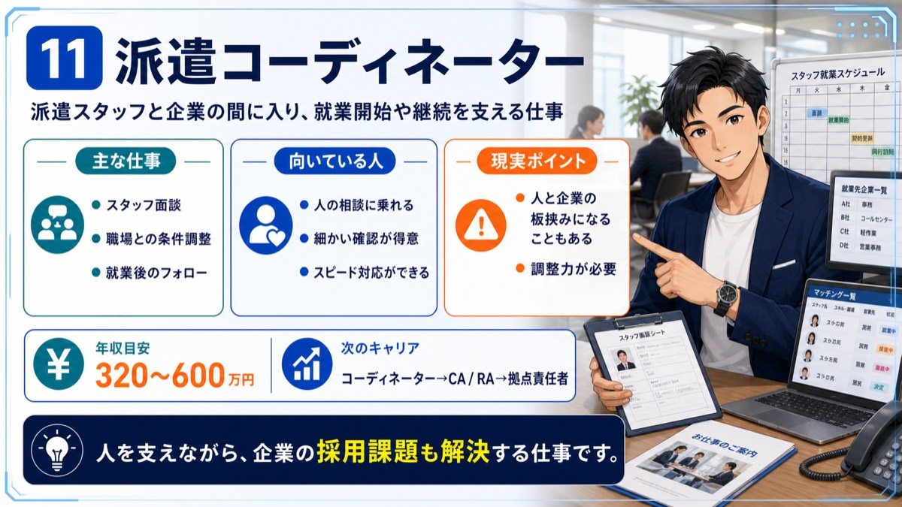
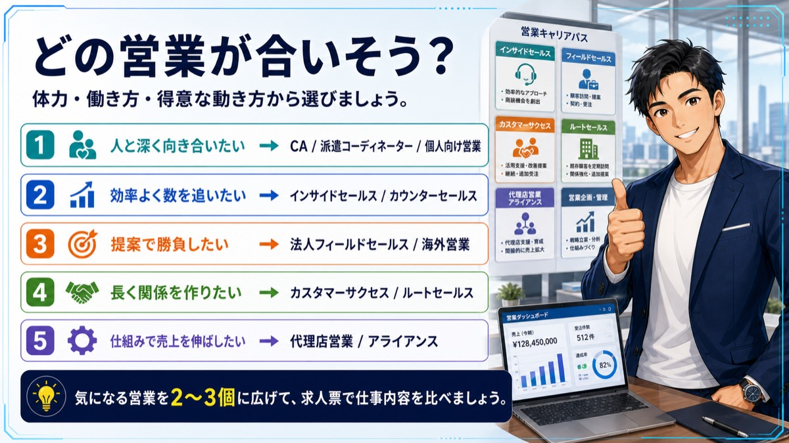

Job Lesson
営業職を理解する
営業職は「売る仕事」だけではなく、相手・商材・営業スタイルによって働き方が大きく変わります。





次に見るもの
営業職に興味がある方は、面接前に回答の組み立て方も確認してください。
Job Lesson
営業職は「売る仕事」だけではなく、相手・商材・営業スタイルによって働き方が大きく変わります。





営業職に興味がある方は、面接前に回答の組み立て方も確認してください。